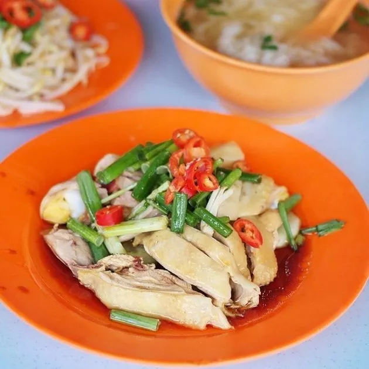

History of Ipoh
Home
About Ipoh
Recognized by LonelyPlanet to be one of the best places for retirement, Ipoh is a lovely town that is rich for its history and gastronomic delights. Best known for its food, most tourists stop by and stay a day or two to fill themselves up here. The easiest way to tell which store would be best, "the dodgier the restaurant, the better it is!"

Lou Wong
The name ‘Bean Sprout Chicken’ often confuses, leading people to think that those two ingredients are jointly used in a dish. In fact, the chicken and bean sprout are cooked separately in two equally mouth-watering dishes.
The steamed chicken skin is smooth and chewy, while the flesh is tender yet firm; whereas the bean sprouts are fat and crunchy. You can choose to have them with rice, or sweet and fresh kuey teow soup.
- Address: 49, Jalan Yau Tet Shin, 30300 Ipoh, Perak, Malaysia.
- Opening Hours: Daily for lunch and dinner.
Funny Mountain Soy Bean
Tau fu fah (soybean pudding) is a type of Chinese snack made of very soft tofu. Possibly one of the best Tau Fu Fah can be found in Funny Mountain, deemed the best in the world by 8TV. Bathed in a sugary concoction, the tau fu fah is warm and so smooth that it will slide down your throat.
- Price: RM2.50/bowl
- Address: Jalan Theatre, 30300 Ipoh, Perak, Malaysia.
- Opening Hours: Daily from 10:30am to 7:30pm (subject to availability)
Thean Chun
A delightful blend of sweet, fragrant prawn broth and shredded chicken, this Ipoh spin of the traditional kuey tiaw soup leaves an amazing aftertaste in your mouth. Before you know it, you'd have emptied the whole bowl of noodles.
- Price: RM6/bowl
- Address: 73, Jalan, Bandar Timah, 30000 Ipoh, Perak, Malaysia
- Opening Hours: Fri to Wed 9.30am until late lunch | Closed on Thursday
Dai Shu Geok
They have a wide selection of yong tau fu, priced around RM0.80 each. The fish paste used is amazing, allowing the yong tau fu to be packed with flavours without having any fishy taste. You can choose to devour the yong tau fu with asam laksa, curry or clear broth noodles.
- Address: 652, Jalan King, Pasir Pinji, 31650 Ipoh, Perak, Malaysia.
- Opening Hours: Thurs to Tues 8.30am to 5.30 pm | Closed on Wednesdays.
K10 Claypot Chicken Rice
Although it’s called Claypot Chicken Rice, you have the option of having your soy-infused rice with chicken, pork or salted fish, in any combination. Every mouthful of this savoury goodness will have you craving for more.
- Address: 576, Lorong Bercham 4, Kampung Bercham, 31400 Ipoh, Perak, Malaysia.
- Opening Hours: Fri to Wed from 5:30pm to 11pm | Closed on Thursdays
- Contact: +60125171116
Tong Sui Kai
Upon arriving at Tong Sui Kai, walk past the less crowded areas and head toward Stall 41 for their to-die-for Mixed Fruit Shaved Ice with Ice Cream. The shaved ice is covered with fruits such as dragon fruit, longan, mango watermelon, honeydew; and also nuts, sago and ice-cream. An ideal frozen treat to beat the sweltering Malaysian heat.
- Price: RM6/bowl
- Address: Jalan Sultan Ekram Taman Jubilee, 30300 Ipoh, Perak, Malaysia
- Opening Hours: Daily from 6pm to 2am
Sin Yoon Leong
Sin Yong Loong is one of the earliest traditional Hainanese coffee shops, and the original white coffee outlet in Ipoh! You can’t visit Ipoh without having a taste of Ipoh’s famed drink. The white coffee here is fragrant, rich and frothy, with a slightly bitter aftertaste that is uniquely Nanyang.
- Price: From RM2
- Address: 15A, Jalan Bandar Timah, 30000 Ipoh, Perak, Malaysia.
- Opening Hours: Daily from 6.30am to 5.30pm